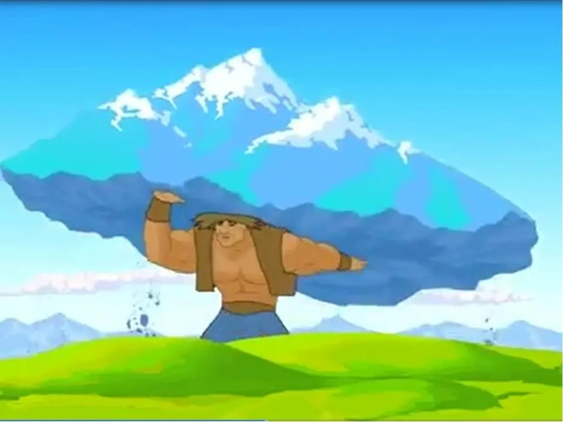

Разделение мифологических персонажей с героическими чертами.
Таусогар-один из героев древнего эпоса с фантастическими сказками иена. Спутники таусогара-Желаяк, Саккулак, Культауысар-мифические образы, живущие в пограничной среде ‘загробного мира’ и ‘этого мира’. Таусогар вместе со своими друзьями помогает сказочным героям на фоне обоих миров, встречается с представителями’загробного мира’ и способствует победе героев. В сказочных сюжетах герой выходит на Байтерека, едет в Самрук и отправляется в ’иной мир", где встречает Таусогара. Исследователи отмечают, что эти герои фантастических сказок являются воплощением призрака стихийных сил природы (В. Я. Пропп, С. Каскабасов). В древнетюркском понимании эти герои считались обладателями сил природы, духа. У каждого из них есть свое жилище, они остаются в своем жилище, не превышая этого порога, а значит, могут править только в этом пространстве. Согласно мифическому познанию, Колтаусар-повелитель озера, Желаяк-Повелитель ветра, Таусогар –духовный повелитель горы. «Қазақстан» Ұлттық энциклопедия. /Бас ред.Б.Аяған. 8 том. Алматы: «Қазақ энциклопедиясы», Алматы, 2006.
